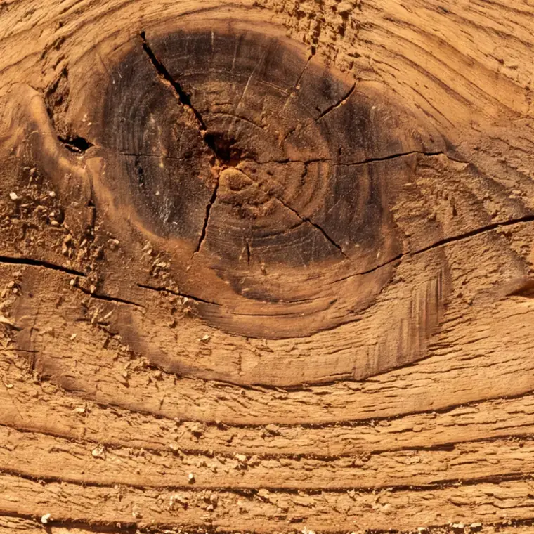
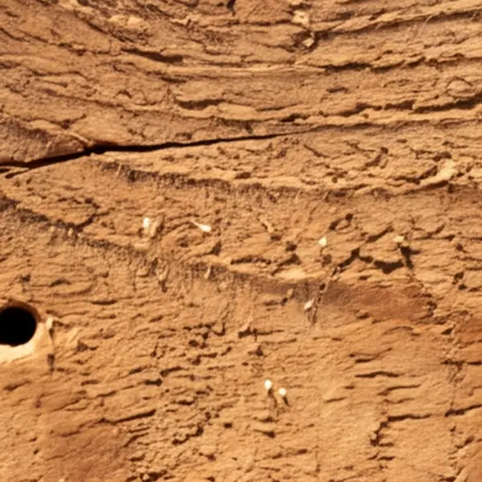
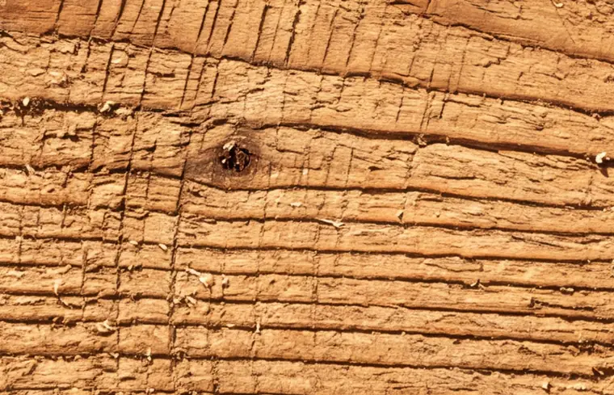
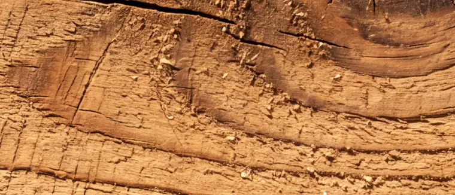
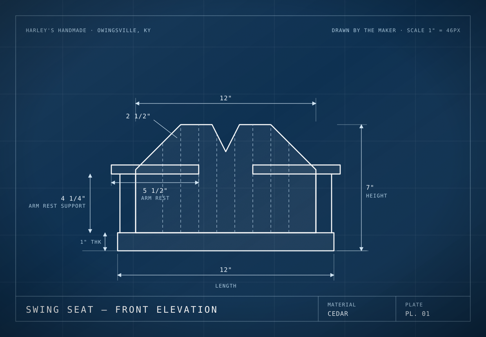
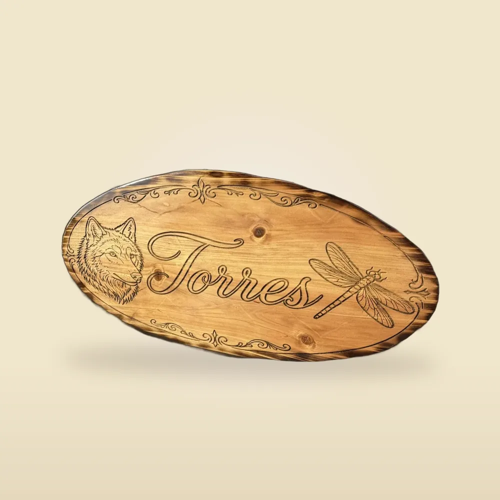
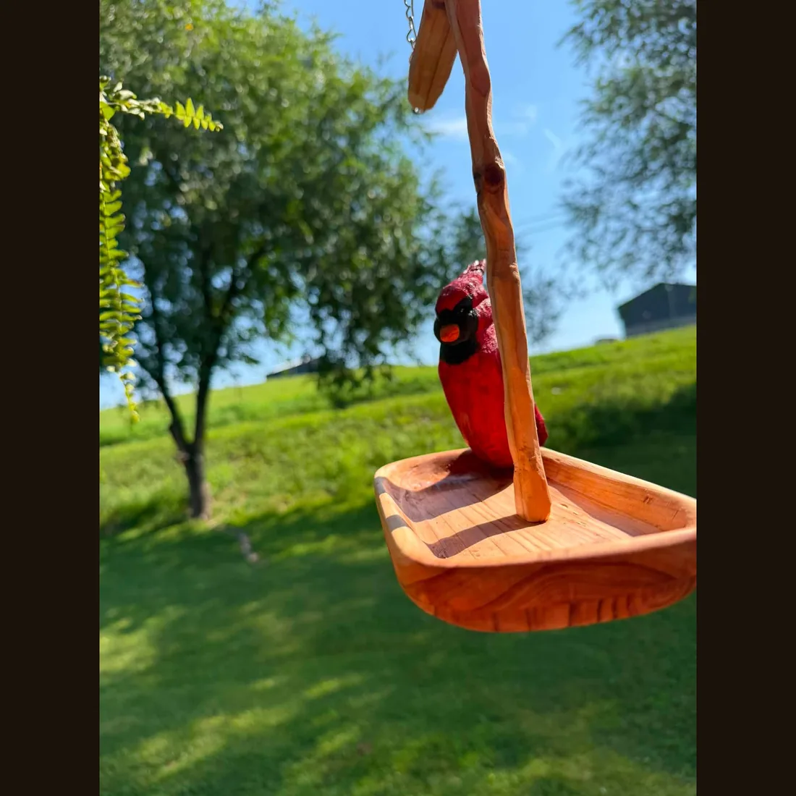
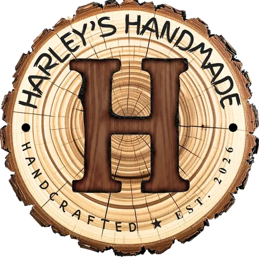

Everything here starts
with one board.
Walk it with me. You'll see the whole shop.
I'm Harley Ritchie. I build porch swings, bird feeders, birdhouses, engraved signs and custom furniture by hand — one at a time, in my own shop. Owingsville, Kentucky · (859) 749-2814
I'm Harley. I build it myself.
There's no crew here and no machine turning out a thousand of the same thing. There's a shed, a bench, and me — measuring twice before I cut once.
My dad was a carpenter twenty-five years, and his dad before him. My daughter's out at the bench with me now. Three generations, going on four.
Read the whole storyI don't build things nobody ordered.
Big shops run a thousand of something and hope. I build what's on the list, so there's no pile of unsold stock heading for a dumpster. Offcuts get used — the cut-off from one swing arm becomes the brace on the next.
A good bit of my lumber is reclaimed — pallet wood and old barn boards when I can get them and they're sound. I won't tell you it's everything I use, because it isn't. Some pieces need new cedar to last outside.
Where the wood comes fromI draw it first.
Every measurement on this plate is mine — board lengths, arm-rest heights, the little right-triangle braces in the corners. I work it out before I cut, which is why the second one matches the first.

See how a piece gets builtReady to go out.
These I keep on hand, or built and waiting on finish. Order one and you're waiting on me to sand it, stain it and box it — not six weeks.

Mini Porch Swing

Engraved Sign

Carved Cardinal
Any name. Any design. Any size.
Bigger furniture, a sign for the farm, something you've had in your head for years. Message me and we'll figure it out — I'll draw it first, so you know what you're getting before I cut.

That's the whole board.
If you saw something you want, or something you want made, I'm the one who answers.